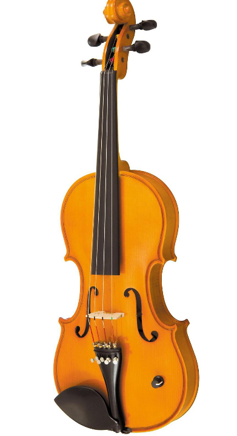
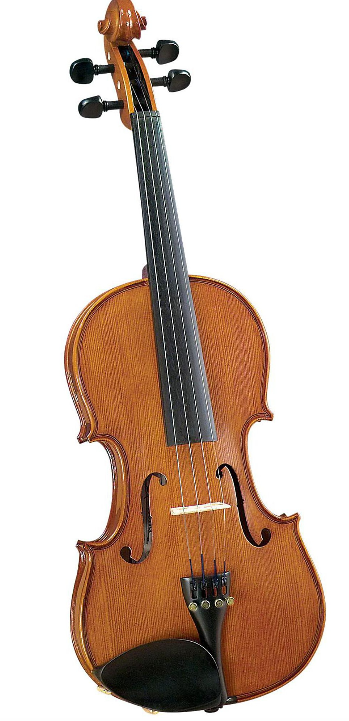
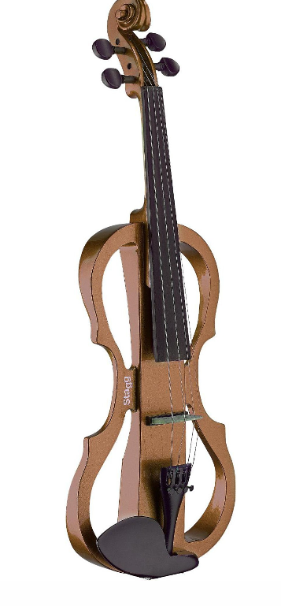

D Z Strad Violin - Model 365 -
Antique Finish- 
D Z Strad N201 Violin with
bow and case D Z Strad Violin - Model 402 -
Hellier Stradivarius Masterpiece
Copy - Full Size (4/4)
Z Strad 4-string Electric 4/4
Violin Outfit E201- 
Scott Cao STV017 Violin

Scott Cao 950 Violin Cannon 1743,
Ex-David 1740, Soil
1714, and Ysaye 1740- 
Rene Jacquemin Violin, Mirecourt
, France, 1929